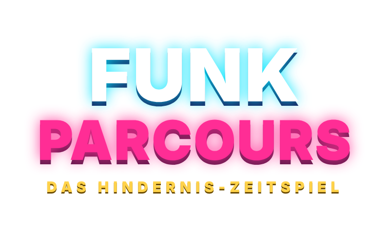
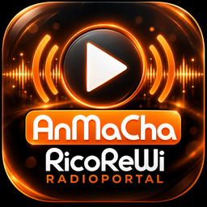

FUNKPARCOURS
Das Hindernis-Zeitspiel
präsentiert vomAnMaCha


🌐 Klappt auch online: Link oder Code an Mitspieler schicken – sie treten von überall bei, im Browser, in der App oder an einem anderen Gerät.
QR-Code scannen oder die Seite öffnen und den Code eingeben. Jedes Handy wird das Steuer-Pad eines Läufers (bis zu 4): Stick zum Laufen, Knopf zum Springen.